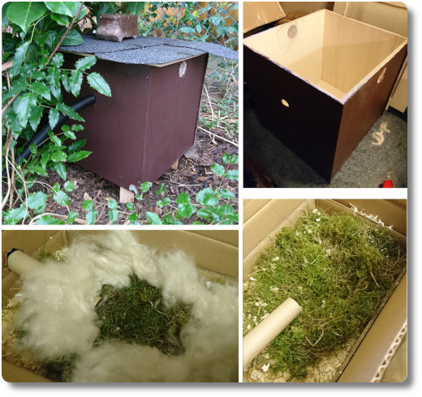

Hummelbox für die Hummelkönigin
Ende Februar habe ich mich mehrere Abende im Keller verdrückt und diese Hummelbox gebaut. Die Anleitung dafür gibt es im Netz, die Utensilien dafür bekommt man für wenig Geld aus dem Baumarkt und dem Tierbedarf.
Die Inneneinrichtung unserer Box besteht aus Streugut, getrocknetem Moos aus unserem Garten und "Kapok", eine Pflanzendaune, die man im Internet bestellen kann. Eine Papp-Röhre einer Küchenrolle führt die Hummeln vom Eingang der Box in die "Wohnung", direkt auf das Moos. Oben drauf habe ich noch eine kleine, umgedrehte Box gesetzt, die man auf den Fotos nicht sieht, und die den Hummeln den Eindruck vermitteln soll, dass ihre Behausung ein verlassener Mäusebau, und nicht ein Palast für Elefanten ist...
Oftmals wird an die Hummelbox eine Klappe angebracht, nachdem die Hummeln die Box besiedelt haben. Ich habe mich aber entschieden, einen Eingang zu einem Mauseloch zu imitieren, in das die Hummeln gerne rein klettern. Dies soll angeblich mit einem Schlauch für eine Teichpumpe funktionieren. Auf dem Bildausschnitt oben kann man sehen, wie dieser Schlauch vor der Hummelbox nach unten geführt wird. Er ist etwa 80cm lang und am äußeren Ende mit Moos umgeben und durch ein paar Hölzer von Regen geschützt. Der Schlauch ist direkt mit der Küchenrolle verbunden.
Ich finde, der Kasten und besonders die Inneneinrichtung ist ziemlich hübsch geworden - wäre ich eine Hummel, würde ich wohl gerne einziehen. Leider haben wir bis jetzt noch keine am Einflugloch gesehen. Aber vielleicht klappt es ja noch. ^_^